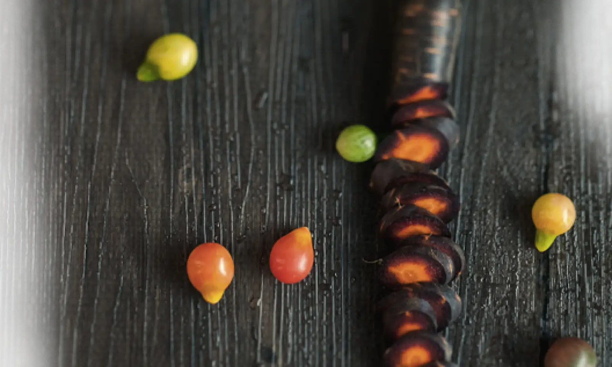
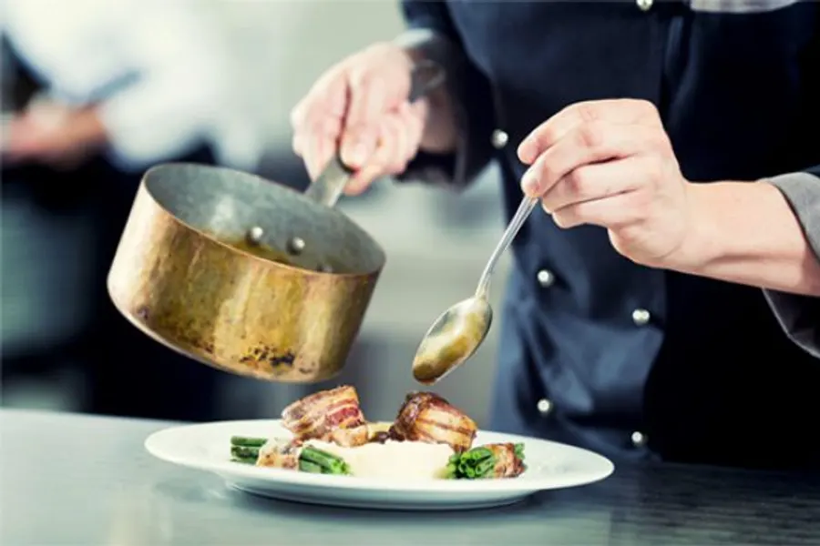

De la simplicité à l'exception
Nous conjuguons nos talents pour que couleurs, matières et saveurs se mêlent et s'animent en harmonie — un repas à votre image, du mariage intime au cocktail d'entreprise.
ans d'expérience aux côtés de grands chefs
frères, une même passion pour la cuisine créative
fait maison, produits de saison sublimés
de Chaingy à la région parisienne, sur-mesure
Une histoire de deux frères
Rien ne les destinait à cuisiner ensemble. Aujourd'hui, Nicolas et Jérémy dirigent L'Autrement Traiteur avec une même exigence : une cuisine respectueuse des saisons, généreuse, et pensée pour vous surprendre.
Passionné par la cuisine, son parcours a été marqué par la rencontre avec de grands chefs — Alain Ducasse, Jean-François Piège, Jacques Thorel — dans des maisons prestigieuses : Le Louis XV, La Bastide de Moustiers, Le Spoon.
18 ans d'expérience lui permettent de laisser libre cours à sa créativité : une cuisine généreuse, au service des saisons, pensée pour sublimer chaque produit.
Rien ne le prédestinait à devenir cuisinier amateur passionné. Formé à la comptabilité, il devait d'abord assurer la gestion de L'Autrement — avant de vouloir, très vite, mettre la main à la pâte.
Sportif dans l'âme, son esprit de compétition lui donne l'énergie nécessaire pour avancer aux côtés de son frère dans cette aventure commune.

« Le goût du plaisir, celui de satisfaire et de graver dans le temps et les esprits un moment unique et heureux. »— L'esprit L'Autrement Traiteur
Partager un repas en famille
L'Autrement Traiteur vous accompagne à chaque événement important de votre vie — baptême, mariage, anniversaire — avec des services sur-mesure où se conjuguent savoir-faire et écoute attentive.
Recevez chez vous en toute liberté : nous venons avec nos équipements, notre vaisselle, et assurons le service et le rangement. Nous cuisinons, vous profitez.
Ce qui sort de notre cuisine
Un aperçu de nos créations — la carte évolue avec les saisons et se compose entièrement selon vos envies.
Profiter d'un cocktail entre collègues
Cocktails, réunions, dîners de gala, opérations de prestige, lancements médiatiques, séminaires, conventions, déjeuners : nous mettons notre professionnalisme à votre service.
Nous répondons aussi à vos besoins du quotidien avec la livraison de plateaux-repas, adaptés à vos impératifs professionnels.
Ils ont goûté, se sont régalés
Un laboratoire aux petits oignons
Besoin des conseils d'une équipe de professionnels ? Envie d'un déjeuner-test avant votre réception ? Curieux de voir ce qui se cache derrière nos toques ? Notre équipe vous accueille dans ses locaux.
C'est du gâteau
Racontez-nous votre projet — date, nombre d'invités, envies — et nous revenons vers vous rapidement pour construire ensemble un menu sur-mesure.